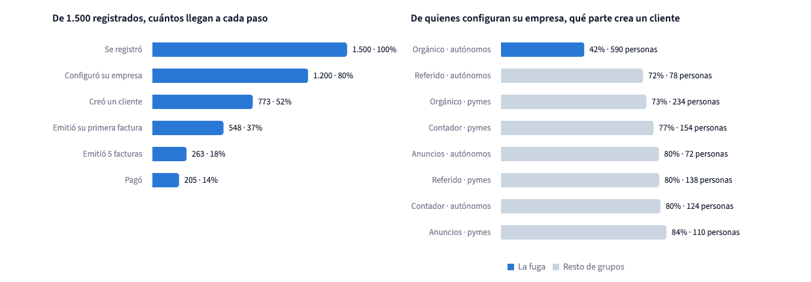
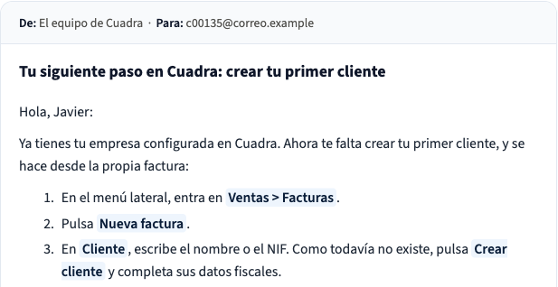

Un flujo con IA que encuentra a quienes se quedaron antes de su primera factura, le escribe a cada uno el correo exacto que necesita y deja un grupo de control para demostrar si funcionó.


uv sync uv run cuadra correr uv run cuadra panel